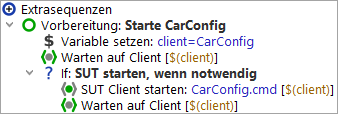

| Version 6.0.3 |
Dieses Kapitel enthält eine Anleitung, wie Sie auf kürzestem Weg Ihre Anwendung als SUT (System Under Test) einrichten.
 Video-Anleitung für Java-Anwendungen: 'Der Schnellstart Assistent
Java'
Video-Anleitung für Java-Anwendungen: 'Der Schnellstart Assistent
Java'
Video-Anleitung für Web-Anwendungen: 'Der Schnellstart Assistent Web'
Damit Ihre Anwendung von QF-Test als SUT wahrgenommen wird, muss sie im einfachen Fall aus QF-Test heraus gestartet werden. Es gibt eine Anzahl von speziellen Prozessknoten unter »Einfügen«-»Prozess Knoten«, um diese Aufgabe zu erfüllen. Der empfohlene, komfortablere und sichere Weg ist jedoch die Benutzung des Schnellstart-Assistenten, der gleich im Anschlusskapitel beschrieben wird. Wer jedoch eine strikte Abneigung gegen Assistentendialoge hat, für den wird der händische Weg in Abschnitt 42.1 beschrieben.
Eine Voraussetzung für das Testen von Java basierten SUTs ist, dass sich QF-Test in das GUI-Toolkit einklinken kann:
Swing Für reine Swing Anwendungen oder Kombinationen aus Swing und SWT hängt sich QF-Test in die JVM Tools Schnittstelle von Java ein. QF-Test kann dies normalerweise direkt, nur für spezielle JDKs kann es nötig sein, diese zunächst zu instrumentieren. Details dazu finden Sie in Deinstrumentieren eines JRE.
JavaFX Für JavaFX und entsprechende Kombinationen wird die Verbindung über den QF-Test Agent hergestellt. Bitte stellen Sie sicher, dass die Option Über QF-Test Agent verbinden aktiviert ist.
SWT Für das Testen von SWT oder Eclipse basierten Anwendungen kann eine Instrumentierung der SWT Bibliothek erforderlich sein. Der im folgenden beschriebene Schnellstart-Assistent baut bei Bedarf einen entsprechenden Schritt in die Startsequenz ein. Detaillierte technisch Informationen hierzu finden Sie in Abschnitt 43.2.
Web Das Testen von Webanwendungen erfordert keine Instrumentierung, jedoch gibt es Einschränkungen zu beachten, die in Kapitel 13 näher beschrieben sind.
QF-Test bietet Ihnen mit dem Schnellstart-Assistenten einen komfortablen Weg zum Erzeugen einer Startsequenz, um Ihre Applikation als SUT zu betreiben.
Den Schnellstart-Assistenten können Sie über den Menüeintrag
»Extras«-»Schnellstart-Assistent...« oder den  Knopf in der Werkzeugleiste aufrufen. Er führt Sie Schritt für Schritt durch die
Erstellungsprozedur der Startsequenz und sollte selbsterklärend sein.
Knopf in der Werkzeugleiste aufrufen. Er führt Sie Schritt für Schritt durch die
Erstellungsprozedur der Startsequenz und sollte selbsterklärend sein.
|
|  |
||
|
| Abbildung 3.1: Der Schnellstart-Assistent | ||
Als Resultat liefert der Assistent unter dem Knoten "Extrasequenzen" eine Sequenz "Vorbereitung" zum Starten Ihrer Anwendung, ähnlich der, wie sie im folgenden Bild gezeigt wird:
|
|  | ||
|
| Abbildung 3.2: Startsequenz als Resultat des Schnellstart-Assistenten | ||
Die erstellte Vorbereitungssequenz sieht je nach Typ der Applikation unterschiedlich aus, sie folgen aber alle einen gewissen Aufbau. Zuerst finden Sie einen 'Variable setzen' Knoten, der den Namen des SUT-Clients für QF-Test festlegt. Danach wird ein 'Warten auf Client' Knoten erstellt, der prüft, ob das SUT bereits läuft. Dessen Ergebnis wird im darauf folgenden 'If' Knoten verwendet, in dem das SUT gestartet wird. Der Start erfolgt mittels eines Startknotens, dessen Typ und Attribute von der Art Ihrer Applikation abhängen, gefolgt wiederum von einem 'Warten auf Client' Knoten, welcher überprüft, dass während des Startvorgangs eine Verbindung zwischen Ihrer Applikation und QF-Test zustande kommt. (Details zu den Startknoten für die verschiedenen Anwendungstypen finden Sie in Abschnitt 42.1.)
SwingJavaFX Für Swing und JavaFX basierte Applikationen ist die Startsequenz kurz und direkt, außer für das Testen eines Applets im Browser bzw. einer Webstart Anwendung; hier werden eine oder mehrere spezielle Prozeduren aus der Standardbibliothek verwendet.
SWT Bei SWT basierten Anwendungen wird zusätzlich ein Prozeduraufruf für die SWT Instrumentierung eingefügt.
Web Die Startsequenz für Web enthält zusätzliche Knoten zum Setzen von Variablen, zur Initialisierung des Browser-Cache und der Einstellungen für Cookies und ggf. zur Installation eines AJAX Toolkit-Resolvers. Weitere Information finden Sie in Kapitel 13.
Die Startsequenz kann nun direkt von Ihnen gestartet werden, in dem Sie den grünen Vorbereitungsknoten im Baum auswählen und den Knopf "Wiedergabe
starten"  in der Werkzeugleiste drücken.
in der Werkzeugleiste drücken.
Ihre Applikation sollte dabei ordnungsgemäß gestartet und der rote "Aufnahme starten" Knopf  in der QF-Test Werkzeugleiste aktiv werden. Letzteres zeigt an, dass QF-Test
erfolgreich die Verbindung zum SUT hergestellt hat.
in der QF-Test Werkzeugleiste aktiv werden. Letzteres zeigt an, dass QF-Test
erfolgreich die Verbindung zum SUT hergestellt hat.
Nun sind Sie bereit, Ihre ersten Testsequenzen aufzunehmen und wieder ablaufen zu lassen, so wie es in Kapitel 4 beschrieben ist. Im Hilfemenü finden Sie das sehr empfehlenswerte Learning-by-doing Tutorial, welches Sie Schritt für Schritt durch die Anwendungskonzepte von QF-Test führt.
Sollten Sie wider Erwarten eine Fehlermeldung bekommen oder der rote "Aufnahme starten" Knopf inaktiv bleiben, dann gehen Sie bitte zum folgenden Abschnitt.
Falls Ihre Anwendung (oder das Browser-Fenster im Falle von Webtesten) nicht erscheint:
Falls das SUT erscheint, aber der Aufnahmeknopf inaktiv bleibt:
qfs.swt.instrument.setup Fehler oder Warnungen
ausgegeben wurden.
Nach möglichen Anpassungen an Testsuite oder Einstellungen können Sie ein erneutes Ausführen der Startsequenz probieren. Sollten Sie mit den hier gegebenen Hinweisen nicht weiter kommen, können Sie ggf. die Beispiel-Testsuite aus dem Tutorial ausprobieren oder Sie kontaktieren unseren Support.
Die Ausgaben aller von QF-Test gestarteten Prozesse werden von QF-Test umgeleitet und im Protokoll unter dem Knoten gespeichert, der den Prozess gestartet hat. Dabei macht QF-Test keinen Unterschied zwischen SUT Clients und sonstigen Prozessen oder Shellskripten, die mittels eines 'Programm starten' oder 'Shellkommando ausführen' Knotens gestartet wurden.
Das Hauptfenster enthält ein gemeinsames Terminal für die Ausgaben aller Prozesse, die von einem Test aus diesem Fenster gestartet wurden. Das Untermenü »Ansicht«-»Terminal« enthält einige Menüeinträge, mit deren Hilfe Sie das Terminal ein- und ausschalten oder festlegen können, ob Baum oder Terminal den Bereich links unten nutzen sollen, ob lange Zeilen umgebrochen werden und ob automatisch an das Ende gescrollt werden soll, wenn neue Ausgaben eintreffen. Außerdem können Sie das Terminal löschen oder seinen Inhalt in eine Datei speichern. Die maximale Größe des Terminals wird über die Option Maximalgröße des gemeinsamen Terminals (kB) festgelegt.
Zusätzlich zum gemeinsamen Terminal gibt es für jeden aktiven Prozess und die letzten beendeten Prozesse ein individuelles Terminalfenster, das ebenfalls die Ausgaben des Prozesses anzeigt. Terminalfenster sind über das »Clients« Menü zugänglich. Das gemeinsame Terminal dient hauptsächlich dazu, auf das Eintreffen neuer Ausgaben aufmerksam zu machen, während die individuellen Terminalfenster besser zum gründlichen Studieren der Ausgaben geeignet sind.
Über das »Clients« Menü können Prozesse auch beendet werden, entweder einzeln oder alle auf einmal mittels »Clients«-»Alle beenden«.
Die Anzahl der beendeten Prozesse, die im »Clients« Menü verfügbar sind, wird über die Option Wie viele beendete Clients im Menü festgelegt (Standard ist 4). Wenn Ihre Prozesse sehr viele Ausgaben erzeugen, kann es sinnvoll sein, diese Zahl zu reduzieren um Speicher zu sparen.
Hinweis Das »Clients« Menü ist auch hilfreich, wenn man nicht sicher ist, welches spezifische QF-Test Produkt man kaufen soll. Die von Ihrer Anwendung genutzten GUI-Technologien werden neben dem aktiven Client-Namen in '[ ]' dargestellt. Das Beispiel unten zeigt zwei Clients, die Java Swing bzw. Web benutzen, was nahelegt eine QF-Test/swing+web Lizenz zu erwerben.
|
|  |
||
|
| Abbildung 3.3: Information zu genutzten GUI-Technologien | ||
Wird eine zweite Java VM aus einem bereits verbundenen SUT gestartet, erkennt QF-Test beim Verbindungsaufbau, dass es sich um einen Kindprozess des ersten SUT handelt und vergibt automatisch einen neuen Client Namen. Hierzu wird dem Namen des ersten SUT ':2' angefügt, was betont, dass es sich um den zweiten Prozess für diesen Client handelt. Einem weiteren derart gestarteten SUT wird ':3' an den Namen angefügt, es sei denn, das zweite SUT ist bereits beendet, so dass ':2' wieder verfügbar ist.
Eine Sequenz zum indirekten Start eines SUT besteht also üblicherweise aus einem Event Knoten der z.B. einen Buttonklick oder eine Menüauswahl auslöst und das erste SUT zum Start des zweiten SUT veranlasst, gefolgt von einem 'Warten auf Client' Knoten für den um ':2' erweiterten Client Namen.
| Letzte Änderung: 6.9.2022 Copyright © 1999-2022 Quality First Software GmbH |